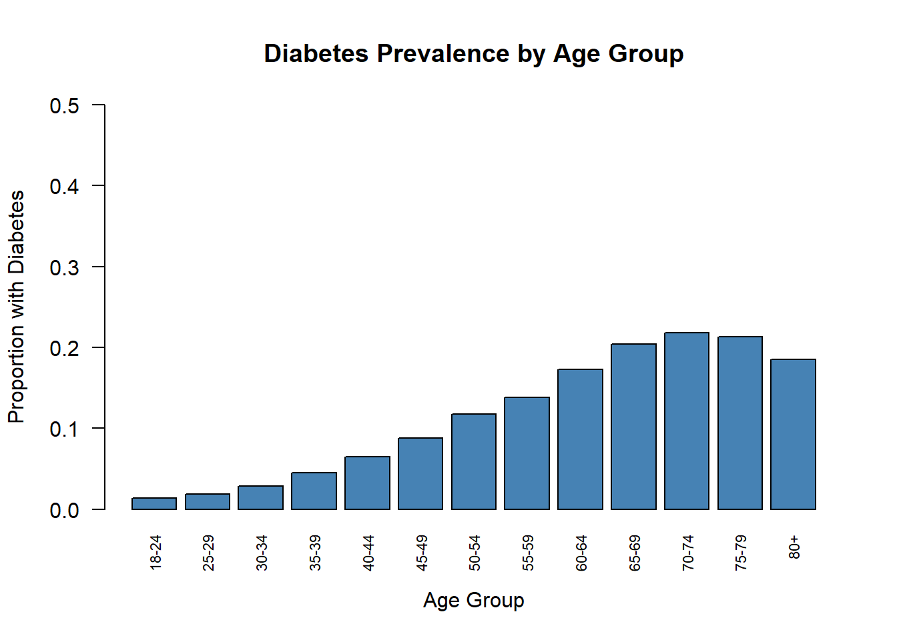
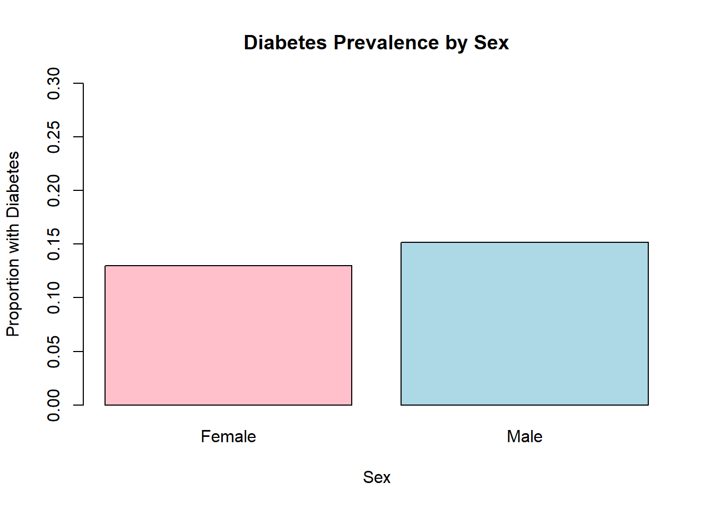
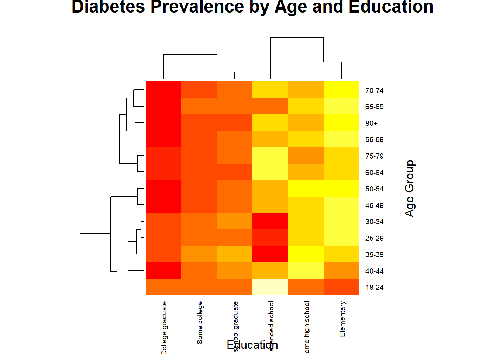
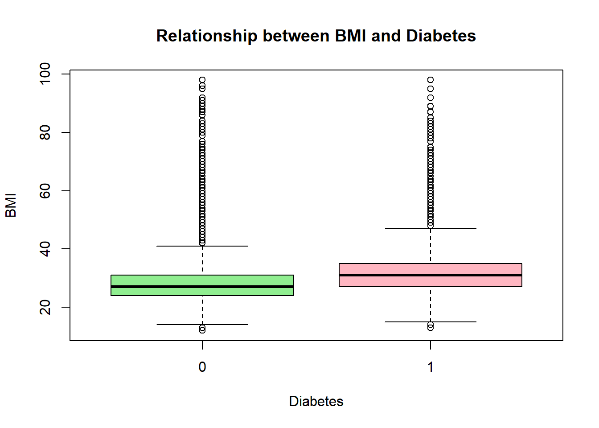
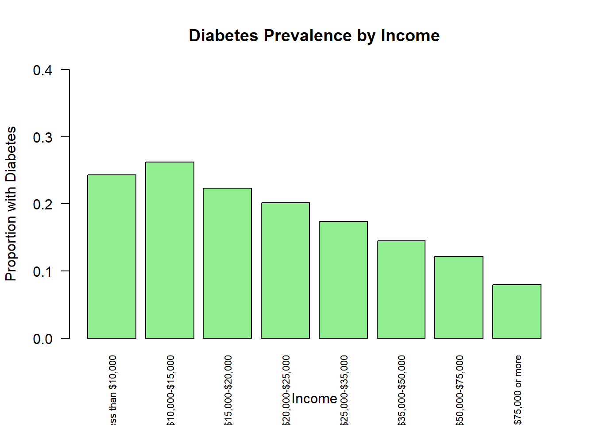
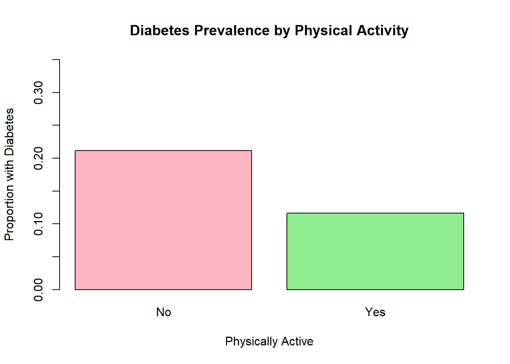

The Behavioral Risk Factor Surveillance System (BRFSS) is a health-related telephone survey that is collected annually by the CDC. Each year, the survey collects responses from over 400,000 Americans on health-related risk behaviors, chronic health conditions, and the use of preventative services. diabetes _ binary _ health _ indicators _ BRFSS2015.csv is a clean data set of 253,680 survey responses to the CDC’s BRFSS2015. The target variable Diabetes_binary has 2 classes. 0 is for no diabetes, and 1 is for pre-diabetes or diabetes. This data set has 21 feature variables and is not balanced.The ultimate goal is to build a predictive model that can identify individuals at risk of developing diabetes based on the available data.
The Purpuse of EDA:
We perform the exploratory data analysis (EDA) to clean the data and understand the various variables. Check the missing values and investigate if the data is balanced or not. We can run basic summary statistics to get the feel for the data. The purpose of this EDA is to investigate the relationships between various health indicators and the presence of diabetes in the population.
In this data set I will be focusing on binary variables (diabetes, sex etc) which have “Yes/No” or male/female values.The target variable is “Diabetes_binary”. The predictor variables are Age, Income, education etc. The meaning full factor levels should be created for ordinal variables (General Health, Education, Age and Income).
# Loading packageslibrary(tidyverse)
── Attaching core tidyverse packages ──────────────────────── tidyverse 2.0.0 ──
✔ dplyr 1.1.4 ✔ readr 2.1.5
✔ forcats 1.0.0 ✔ stringr 1.5.1
✔ ggplot2 3.5.1 ✔ tibble 3.2.1
✔ lubridate 1.9.3 ✔ tidyr 1.3.1
✔ purrr 1.0.2
── Conflicts ────────────────────────────────────────── tidyverse_conflicts() ──
✖ dplyr::filter() masks stats::filter()
✖ dplyr::lag() masks stats::lag()
ℹ Use the conflicted package (<http://conflicted.r-lib.org/>) to force all conflicts to become errors
library(httr)library(jsonlite)
Attaching package: 'jsonlite'
The following object is masked from 'package:purrr':
flatten
Diabetes_binary HighBP HighChol CholCheck
Min. :0.0000 Min. :0.000 Min. :0.0000 Min. :0.0000
1st Qu.:0.0000 1st Qu.:0.000 1st Qu.:0.0000 1st Qu.:1.0000
Median :0.0000 Median :0.000 Median :0.0000 Median :1.0000
Mean :0.1393 Mean :0.429 Mean :0.4241 Mean :0.9627
3rd Qu.:0.0000 3rd Qu.:1.000 3rd Qu.:1.0000 3rd Qu.:1.0000
Max. :1.0000 Max. :1.000 Max. :1.0000 Max. :1.0000
BMI Smoker Stroke HeartDiseaseorAttack
Min. :12.00 Min. :0.0000 Min. :0.00000 Min. :0.00000
1st Qu.:24.00 1st Qu.:0.0000 1st Qu.:0.00000 1st Qu.:0.00000
Median :27.00 Median :0.0000 Median :0.00000 Median :0.00000
Mean :28.38 Mean :0.4432 Mean :0.04057 Mean :0.09419
3rd Qu.:31.00 3rd Qu.:1.0000 3rd Qu.:0.00000 3rd Qu.:0.00000
Max. :98.00 Max. :1.0000 Max. :1.00000 Max. :1.00000
PhysActivity Fruits Veggies HvyAlcoholConsump
Min. :0.0000 Min. :0.0000 Min. :0.0000 Min. :0.0000
1st Qu.:1.0000 1st Qu.:0.0000 1st Qu.:1.0000 1st Qu.:0.0000
Median :1.0000 Median :1.0000 Median :1.0000 Median :0.0000
Mean :0.7565 Mean :0.6343 Mean :0.8114 Mean :0.0562
3rd Qu.:1.0000 3rd Qu.:1.0000 3rd Qu.:1.0000 3rd Qu.:0.0000
Max. :1.0000 Max. :1.0000 Max. :1.0000 Max. :1.0000
AnyHealthcare NoDocbcCost GenHlth MentHlth
Min. :0.0000 Min. :0.00000 Min. :1.000 Min. : 0.000
1st Qu.:1.0000 1st Qu.:0.00000 1st Qu.:2.000 1st Qu.: 0.000
Median :1.0000 Median :0.00000 Median :2.000 Median : 0.000
Mean :0.9511 Mean :0.08418 Mean :2.511 Mean : 3.185
3rd Qu.:1.0000 3rd Qu.:0.00000 3rd Qu.:3.000 3rd Qu.: 2.000
Max. :1.0000 Max. :1.00000 Max. :5.000 Max. :30.000
PhysHlth DiffWalk Sex Age
Min. : 0.000 Min. :0.0000 Min. :0.0000 Min. : 1.000
1st Qu.: 0.000 1st Qu.:0.0000 1st Qu.:0.0000 1st Qu.: 6.000
Median : 0.000 Median :0.0000 Median :0.0000 Median : 8.000
Mean : 4.242 Mean :0.1682 Mean :0.4403 Mean : 8.032
3rd Qu.: 3.000 3rd Qu.:0.0000 3rd Qu.:1.0000 3rd Qu.:10.000
Max. :30.000 Max. :1.0000 Max. :1.0000 Max. :13.000
Education Income
Min. :1.00 Min. :1.000
1st Qu.:4.00 1st Qu.:5.000
Median :5.00 Median :7.000
Mean :5.05 Mean :6.054
3rd Qu.:6.00 3rd Qu.:8.000
Max. :6.00 Max. :8.000
# Check for missing valuescolSums(is.na(diabetes_data))
There are no missing values in the data. First, let’s take a look at the distribution of the target variable, “Diabetes_binary”:
table(diabetes_data$Diabetes_binary)
0 1
218334 35346
prop.table(table(diabetes_data$Diabetes_binary))
0 1
0.860667 0.139333
This shows that 14% of the individuals in the dataset have diabetes. Next, let’s explore the relationships between the predictor variables and the presence of diabetes. We can start by looking at the prevalence of diabetes across different categories of the predictor variables:
# Education and diabetesedu_diab_prop <-prop.table(table(diabetes_data$Education, diabetes_data$Diabetes_binary), 1)[,2] edu_diab_prop
Never attended school Elementary Some high school
0.27011494 0.29260450 0.24224520
High school graduate Some college College graduate
0.17635060 0.14810471 0.09690193
# Income and diabetesinc_diab_prop <-prop.table(table(diabetes_data$Income, diabetes_data$Diabetes_binary), 1)[,2]inc_diab_prop
Less than $10,000 $10,000-$15,000 $15,000-$20,000 $20,000-$25,000
0.24289063 0.26190274 0.22308366 0.20134095
$25,000-$35,000 $35,000-$50,000 $50,000-$75,000 $75,000 or more
0.17401383 0.14507815 0.12182142 0.07960392
# Check the distribution table(diabetes_data$AgeGroup)
# Proportion with diabetes in each age groupage_diab_prop <-prop.table(table(diabetes_data$AgeGroup, diabetes_data$Diabetes_binary), 1)[,2]age_diab_prop
These results provide some initial insights into the factors associated with diabetes. For example, we can see that the prevalence of diabetes increases with age and is higher among individuals with lower levels of education and income. To further explore the relationships, we can create visualizations such as bar plots and heatmaps:
# Plot of diabetes prevalence by age groupbarplot(age_diab_prop, xlab ="Age Group", ylab ="Proportion with Diabetes", main ="Diabetes Prevalence by Age Group",cex.names =0.7, ylim =c(0,0.5),names.arg =c("18-24", "25-29", "30-34", "35-39", "40-44", "45-49","50-54", "55-59", "60-64", "65-69", "70-74", "75-79","80+"), # Set x-axis labelslas =2, # Rotate x-axis labelscol ="steelblue" ) #set the color for bars

The disctribution of the Age group clearly shows that the prevalence of diabetes increases with age.
# Diabetes prevalence by sexsex_diab_prop <-prop.table(table(diabetes_data$Sex, diabetes_data$Diabetes_binary), 1)[,2]barplot(sex_diab_prop, xlab ="Sex", ylab ="Proportion with Diabetes", main ="Diabetes Prevalence by Sex",names.arg =c("Female", "Male"),col =c("pink", "lightblue"),ylim =c(0,0.3))

Males have a slightly higher proportion of diabetes compared to females . This suggests that sex may have some influence on diabetes risk, with males being at higher risk.
# Heatmap of diabetes prevalence by age and educationage_edu_diab_prop <-prop.table(table(diabetes_data$AgeGroup, diabetes_data$Education, diabetes_data$Diabetes_binary), c(1,2))[,,2]heatmap(age_edu_diab_prop,xlab ="Education",ylab ="Age Group",main ="Diabetes Prevalence by Age and Education",col =heat.colors(10),cexRow =0.7, cexCol =0.7,margins =c(5,5))

Heatmap of Diabetes Prevalence by Age and Education:
There is a clear trend of increasing diabetes prevalence with age across all education levels. Within each age group, diabetes prevalence is consistently highest among those with the lowest education levels and decreases as education level increases. The highest diabetes prevalence (around 60%) is seen in the oldest age group (80+) with the lowest education level (never attended school).
# BMI and diabetesboxplot(BMI ~ Diabetes_binary, data = diabetes_data,xlab ="Diabetes", ylab ="BMI",main ="Relationship between BMI and Diabetes",col =c("lightgreen", "lightpink"))

Relationship between BMI and Diabetes:
Individuals with diabetes have a notably higher median BMI and a larger spread of BMI values compared to those without diabetes. This suggests that higher BMI is strongly associated with increased diabetes risk.
# Income and diabetesinc_diab_prop <-prop.table(table(diabetes_data$Income, diabetes_data$Diabetes_binary), 1)[,2]barplot(inc_diab_prop,xlab ="Income", ylab ="Proportion with Diabetes",main ="Diabetes Prevalence by Income",col ="lightgreen",las =2,cex.names =0.7,ylim =c(0,0.4))

Diabetes Prevalence by Income:
There is a clear trend of decreasing diabetes prevalence as income increases. The highest diabetes prevalence (around 29%) is seen in the lowest income group ($10,000-$15,000), while the lowest prevalence (around 9%) is in the highest income group ($75,000 or more). This highlights a significant socioeconomic gradient in diabetes risk.
# Physical activity and diabetesphys_act_diab_prop <-prop.table(table(diabetes_data$PhysActivity, diabetes_data$Diabetes_binary), 1)[,2]barplot(phys_act_diab_prop,xlab ="Physically Active", ylab ="Proportion with Diabetes",main ="Diabetes Prevalence by Physical Activity",names.arg =c("No", "Yes"),col =c("lightpink", "lightgreen"),ylim =c(0,0.35))

Diabetes Prevalence by Physical Activity:
Individuals who are physically inactive have a much higher proportion of diabetes (around 22%) compared to those who are physically active (around 13%). This underscores the importance of physical activity in reducing diabetes risk.
Among individuals without diabetes (0), 93.96% don’t have high blood pressure (0) and 6.04% have high blood pressure (1). Among individuals with diabetes (1), 75.55% don’t have high blood pressure (0) and 24.45% have high blood pressure (1). The proportion of individuals with high blood pressure is higher among those with diabetes (24.45%) compared to those without diabetes (6.04%). This suggests that having high blood pressure is associated with a higher prevalence of diabetes.
Among individuals without diabetes (0), 92.02% don’t have high cholesterol (0) and 7.98% have high cholesterol (1). Among individuals with diabetes (1), 77.99% don’t have high cholesterol (0) and 22.01% have high cholesterol (1). The proportion of individuals with high cholesterol is substantially higher among those with diabetes (22.01%) compared to those without diabetes (7.98%).
This finding suggests that having high cholesterol is strongly associated with a higher prevalence of diabetes. The difference in the proportion of individuals with high cholesterol between the diabetes and non-diabetes groups (22.01% vs 7.98%) is quite large, indicating a significant relationship between these two health conditions.
Among individuals without diabetes (0), 78.86% are not physically active (0) and 21.14% are physically active (1). Among individuals with diabetes (1), 88.39% are not physically active (0) and 11.61% are physically active (1). The proportion of individuals who are physically active is notably lower among those with diabetes (11.61%) compared to those without diabetes (21.14%).
This finding suggests that lack of physical activity is associated with a higher prevalence of diabetes. The difference in the proportion of physically active individuals between the diabetes and non-diabetes groups (11.61% vs 21.14%) is substantial, indicating a significant relationship between physical inactivity and diabetes.
Among individuals without diabetes (0), 84.21% don’t consume fruit (0) and 15.79% consume fruit (1). Among individuals with diabetes (1), 87.14% don’t consume fruit (0) and 12.86% consume fruit (1). The proportion of individuals who consume fruit is slightly lower among those with diabetes (12.86%) compared to those without diabetes (15.79%).
This finding suggests a weak association between not consuming fruit and a higher prevalence of diabetes. The difference in the proportion of fruit consumers between the diabetes and non-diabetes groups (12.86% vs 15.79%) is relatively small, indicating a less substantial relationship compared to physical activity.
Among individuals without diabetes (0), 82.00% don’t consume vegetables (0) and 18.00% consume vegetables (1). Among individuals with diabetes (1), 87.01% don’t consume vegetables (0) and 12.99% consume vegetables (1). The proportion of individuals who consume vegetables is lower among those with diabetes (12.99%) compared to those without diabetes (18.00%).
This finding suggests a weak to moderate association between not consuming vegetables and a higher prevalence of diabetes. The difference in the proportion of vegetable consumers between the diabetes and non-diabetes groups (12.99% vs 18.00%) is somewhat larger than for fruit consumption, but still less substantial than the association seen with physical activity.
Overall Summary:
The analyses reveal several key factors associated with diabetes prevalence in this dataset. Age, education, income, BMI, and physical activity all show significant relationships with diabetes risk. Diabetes prevalence increases markedly with age and is highest among those with the lowest education and income levels. Higher BMI and physical inactivity are also strongly associated with increased diabetes prevalence. Males appear to have a slightly higher risk of diabetes compared to females, though the difference is not as pronounced as for the other factors examined. These findings suggest that efforts to prevent and manage diabetes should focus on promoting healthy lifestyles (maintaining a healthy BMI, engaging in regular physical activity) and addressing socioeconomic disparities in health. Targeted interventions for older adults and those with lower education and income levels may be particularly beneficial in reducing the burden of diabetes in this population.
The analysis of these health-related factors reveals several important associations with diabetes prevalence: High blood pressure and high cholesterol show the strongest associations with diabetes. Individuals with these conditions have a much higher prevalence of diabetes compared to those without these conditions. Lack of physical activity is also notably associated with increased diabetes prevalence. Physically inactive individuals are more likely to have diabetes compared to those who are active. Fruit and vegetable consumption show weaker associations with diabetes prevalence, but individuals who don’t consume these foods do have a slightly higher likelihood of having diabetes. These findings suggest that high blood pressure, high cholesterol, and physical inactivity are important risk factors for diabetes in this population. Interventions targeting these factors, such as promoting physical activity and helping individuals manage their blood pressure and cholesterol levels, could potentially help reduce the burden of diabetes. While fruit and vegetable consumption appear to be less strongly associated with diabetes in this analysis, promoting a healthy diet rich in these foods may still be beneficial for overall health and potentially for diabetes prevention and management.
Among the three lifestyle factors examined (physical activity, fruit consumption, and vegetable consumption), lack of physical activity shows the strongest association with a higher prevalence of diabetes. The proportion of physically active individuals is markedly lower in the diabetes group compared to the non-diabetes group. Fruit and vegetable consumption show weaker associations with diabetes prevalence. The proportions of individuals consuming these foods are only slightly lower in the diabetes group compared to the non-diabetes group, with vegetable consumption showing a somewhat stronger association than fruit consumption. These findings suggest that promoting physical activity should be a key focus of diabetes prevention and management efforts. While encouraging fruit and vegetable consumption is also important for overall health, these factors appear to have a less direct relationship with diabetes prevalence in this data.